Proteins are the end products of most information pathways. A typical cell requires thousands of different proteins at any given moment. These must be synthesized in response to the cell's current needs, transported (targeted) to the appropriate cellular location, and degraded when the need has passed. The protein synthesis pathway is much better understood than protein targeting or degradation, and coverage in this chapter reflects that fact.
Protein synthesis is the most complex of biosynthetic mechanisms, and understanding it has been one of the greatest challenges in the history of biochemistry. In eukaryotic cells, protein synthesis requires the participation of over 70 different ribosomal proteins; 20 or more enzymes to activate the amino acid precursors; a dozen or more auxiliary enzymes and other specific protein factors for the initiation, elongation, and termination of polypeptides; perhaps 100 additional enzymes for the final processing of different kinds of proteins; and 40 or more kinds of transfer and ribosomal RNAs. Thus almost 300 different macromolecules must cooperate to synthesize polypeptides. Many of these macromolecules are organized into the complex three-dimensional structure of the ribosome to carry out stepwise translocation of the mRNA as the polypeptide is assembled.
To appreciate the central importance of protein synthesis to every cell, it can be enlightening to consider the fraction of cellular resources that are devoted to this process. Protein synthesis can account for up to 90% of the chemical energy used by a cell for all biosynthetic reactions. In E. coli, the numbers of different types of proteins and RNA molecules involved in protein synthesis are similar to those in eukaryotic cells. Both prokaryotic and eukaryotic cells contain thousands of copies of each protein and RNA type per cell. When totaled, the 20,000 ribosomes, 100,000 related protein factors and enzymes, and 200,000 tRNAs present in a typical bacterial cell (with a volume of 100 nm3) can account for more than 35% of the cell's dry weight.
Despite this great complexity, proteins are made at exceedingly high rates. A complete polypeptide chain of 100 residues is synthesized in an E. coli cell at 37 'C in about 5 s. The synthesis of the thousands of different proteins in each cell is tightly regulated so that only the required number of molecules of each is made under any given set of metabolic circumstances. To maintain the appropriate mix and concentration of proteins in a cell, the targeting and degradative processes must keep pace with synthesis. Research is gradually unraveling the extraordinary set of biochemical processes that shepherd each protein to its proper location in the cell and selectively degrade proteins no longer required.
Three major advances in the 1950s set the stage for our present knowledge of protein biosynthesis. In the early 1950s Paul Zamecnik and his colleagues designed a set of experiments to investigate the question: Where in the cell are proteins synthesized? They injected radioactive amino acids into rats, and at different time intervals after the injection the liver was removed, homogenized, and fractionated by centrifugation. The subcellular fractions were then examined for the presence of radioactive protein. When hours or days were allowed to elapse after injection of the labeled amino acids, all the subcellular fractions contained labeled proteins. However, when the liver was removed and fractionated only minutes after injection of the labeled amino acids, labeled protein was found only in a fraction containing small ribonucleoprotein particles. These particles, earlier discovered in animal tissues by electron microscopy, were thus identified as the site of protein synthesis from amino acids; later they were named ribosomes (Fig. 26-1).
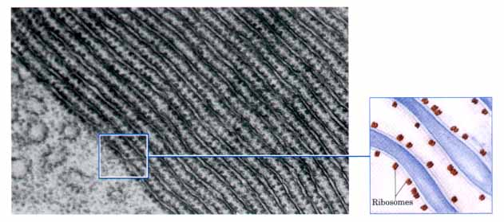
Figure 26-1 : Electron micrograph and schematic drawing of a portion of a pancreatic cell, showing ribosomes attached to the outer (cytosolic) face of the endoplasmic reticulum. The ribosomes are the numerous small dots bordering the parallel layers of membranes.
The second advance was made by Mahlon Hoagland and Zamecnik; they found that when incubated with ATP and the cytosolic fraction of liver cells, amino acids became "activated." The amino acids were attached to a special form of heat-stable soluble RNA, later called transfer RNA (tRNA), to form aminoacyl-tRNAs. The enzymes catalyzing this process are the aminoacyl-tRNA synthetases.
The third major advance occurred when Francis Crick asked: How is the genetic information that is coded in the 4-letter language of nucleic acids translated into the 20-letter language of proteins? Crick reasoned that tRNA must serve the role of an adapter, one part of the tRNA molecule binding a specific amino acid and some other part of the tRNA recognizing a short nucleotide sequence in the mRNA coding for that amino acid (Fig. 26-2). This idea was soon verified. The tRNA adapter "translates" the nucleotide sequence of an mRNA into the amino acid sequence of a polypeptide. The overall process of mRNAguided protein synthesis is often referred to simply as translation. These developments soon led to recognition of the major stages of protein synthesis and ultimately to the elucidation of the genetic code words for the amino acids. The nature of this code is the focus of the discussion that follows. |
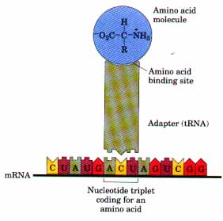 Figure 26-2 Crick's hypothesis of the adapter function of tRNA. Today we know that the amino acid is covalently bound at the 3' end of the tRNA and that a specific nucleotide triplet elsewhere in the tRNA molecule interacts with a specific triplet codon in the mRNA through hydrogen bonding of complementary bases. |
By the 1960s it had long been apparent that at least three nucleotide residues of DNA are required to code for each amino acid. The four code letters of DNA (A, T, G, and C) in groups of two can yield only 42 = 16 different combinations, not sufficient to code for 20 amino acids. But four bases in groups of three can yield 43 = 64 different combinations. Early genetic experiments conclusively proved not only that the genetic code words or codons for amino acids are triplets of nucleotides but also that the codons do not overlap and there is no punctuation between codons for successive amino acid residues (Figs. 26-3, 26-4). |
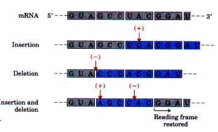 Figure 26-3 The triplet, nonoverlapping code. Evidence for the general nature of the genetic code came from many types of experiments, including genetic experiments on the effects of deletion and insertion mutations. Inserting or deleting one base pair (shown here in the mRNA transcript) alters the sequence of triplets in a nonoverlapping code, as shown, and all amino acids coded by the mRNA following the change are affected. Combining insertion and deletion mutations affects some amino acids but eventually restores the correct amino acid sequence. Adding or subtracting three nucleotides (not shown) leaves the remaining triplets intact, providing evidence that a codon has three, rather than four or five, nucleotides. The triplet codons shaded in gray are those transcribed from the original gene; codons shaded in blue are new codons resulting from the insertion or deletion mutations. |
| The amino acid sequence of a protein is
therefore defined by a linear sequence of contiguous
triplet codons. The first codon in the sequence
establishes a reading frame, in which a new codon begins
every three nucleotide residues. In this scheme there are
three possible reading frames for any given DNA sequence,
and each will generally give a different sequence of
codons (Fig. 26-5). Although it seemed clear that only
one reading frame was likely to contain the information
required for a given protein, the ultimate questions
still loomed: What are the specific three-letter code
words for the different amino acids? How could they be
identified experimentally? In 1961 Marshall Nirenberg and Heinrich Matthaei reported an observation that provided the first breakthrough. They incubated the synthetic polyribonucleotide polyuridylate (designated poly(U)) with an E. coli extract, GTP, and a mixture of the 20 amino acids in 20 different tubes. In each tube a different amino acid was radioactively labeled. Poly(U) can be regarded as an artificial mRNA containing many successive UUU triplets, and it should promote the synthesis of a polypeptide from only one of the 20 different amino acids-that coded by the triplet UUU. A radioactive polypeptide was formed in only one of the 20 tubes, that containing radioactive phenylalanine. Nirenberg and Matthaei therefore concluded that the triplet UUU codes for phenylalanine. The same approach revealed that the synthetic polyribonucleotide polycytidylate or poly(C) codes for formation of a polypeptide containing only proline (polyproline), and polyadenylate or poly(A) codes for polylysine. Thus the triplet CCC must code for proline and the triplet AAA for lysine. |
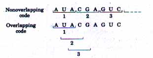 Figure 26-4 Overlapping versus nonoverlapping codes. In nonoverlapping codes, codons do not share nucleotides. In the example shown, the consecutive codons are numbered. In an overlapping code, some nucleotides in the mRNA are shared by different codons. A triplet code with maximum overlap, with consecutive codons defined by the numbered brackets, will have many nucleotides (such as the third nucleotide here) shared by three different codons. Note that in an overlapping code, the sequence of the first codon limits the possible sequences for the second codon. A nonoverlapping code provides much more flexibility in the sequence of neighboring codons and ultimately in the possible amino acid sequences designated by the code. The code used in all living systems is nonoverlapping. |
The synthetic polynucleotides used in such experiments were made by the action of polynucleotide phosphorylase (p. 880), which catalyzes the formation of RNA polymers starting from ADP, UDP, CDP, and GDP. This enzyme requires no template and makes polymers with a base composition that directly reflects the relative concentrations of the nucleoside 5'-diphosphate precursors in the medium. If polynucleotide phosphorylase is presented with UDP, it makes only poly(U). If it is presented with a mixture of five parts of ADP and one of
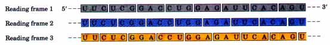
The synthetic polynucleotides used in such experiments were made by the action of polynucleotide phosphorylase (p. 880), which catalyzes the formation of RNA polymers starting from ADP, UDP, CDP, and GDP. This enzyme requires no template and makes polymers with a base composition that directly reflects the relative concentrations of the nucleoside 5'-diphosphate precursors in the medium. If polynucleotide phosphorylase is presented with UDP, it makes only poly(U). If it is presented with a mixture of five parts of ADP and one of CDP, it will make a polymer in which about five-sixths of the residues are adenylate and one-sixth cytidylate. Such a random polymer is likely to have many triplets of the sequence AAA, lesser numbers of AAC, ACA, and CAA triplets, relatively few ACC, CCA, and CAC triplets, and very few CCC triplets (Table 26-1). With the use of different artificial mRNAs made by polynucleotide phosphorylase from different starting mixtures of ADP, GDP, UDP, and CDP, the base compositions of the triplets coding for almost all the amino acids were soon identified. However, these experiments could not reveal the sequence of the bases in each coding triplet.
Figure 26-5 In a triplet, nonoverlapping code, all mRNAs have three potential reading frames, shaded here in different colors. Note that the triplets, and hence the amino acids specified, are very different in each reading frame.
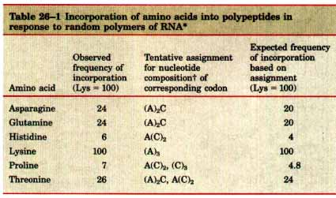
* Presented here is a summary of data from one of the early experiments designed to elucidate the genetic code. An RNA synthesized enzymatically, and containing only A and C residues in a 5:1 ratio, was used to direct polypeptide synthesis. Both the identity and quantity of amino acids incorporated were determined. Based upon the relative abundance of A and C residues in the synthetic RNA, and if the codon AAA (the most likely) is assigned a frequency of 100, there should be three different codons of composition (A)LC, each at a relative frequency of 20; three codons of composition A(C)L, each at a relative frequency of 4.0; and the codon CCC should occur at a relative frequency of 0.8. The CCC assignment here was based on information derived from prior studies with poly(C). Where two tentative codon assignments are made, both are proposed to code for the same amino acid. * Note that these designations of nucleotide composition contain no information on nucleotide sequence.
In 1964 Nirenberg and Philip Leder achieved another breakthrough. They found that isolated E. coli ribosomes will bind a specific aminoacyl-tRNA if the corresponding synthetic polynucleotide messenger is present. For example, ribosomes incubated with poly(U) and phenylalanyl-tRNAPhe (or Phe-tRNAPhe) will bind both polymers, but if the ribosomes are incubated with poly(U) and some other aminoacyltRNA, the aminoacyl-tRNA will not be bound because it will not recognize the UUU triplets in poly(U) (Table 26-2). (Note that by convention, the identity of a tRNA is indicated by a superscript and an aminoacylated tRNA is indicated by a hyphenated name. For example, correctly aminoacylated tRNAAla is alanyl-tRNAAla or Ala-tRNAAla. If the tRNA is incorrectly aminoacylated, e.g., with valine, one would have Val-tRNAAla.) The shortest polynucleotide that could promote specific binding of Phe-tRNAPhe was the trinucleotide UUU. By use of simple trinucleotides of known sequence it was possible to determine which aminoacyl-tRNA bound to each of about 50 of the 64 possible triplet codons. For some codons, either no aminoacy I-tRNAs would bind, or more than one were bound. Another method was needed to complete and confirm the entire genetic code.
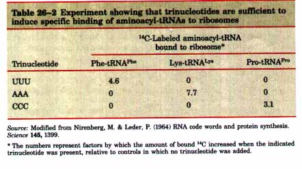 At about this time, a complementary approach was provided by H. Gobind Khorana, who developed methods to synthesize polyribonucleotides with defined, repeating sequences of two to four bases. The polypeptides produced using these RNAs as messengers had one or a few amino .Acids in repeating patterns. These patterns, when combined with information from the random polymers used by Nirenberg and colleagues, permitted unambiguous codon assignments. The copolymer (AC)n., for example, has alternating ACA and CAC codons, regardless of the reading frame: A C A .C A C . A C A . C A C . A C A . The polypeptide synthesized in response to this polymer was found to have equal amounts of threonine and histidine. Because the experiment described in Table 26-1 revealed a histidine codon with one A and two Cs, CAC must code for histidine and ACA for threonine. Similarly, an RNA with three bases in a repeating pattern should yield three different types of polypeptide. Each polypeptide would be derived from a different reading frame and would contain a single kind of amino acid. An RNA with four bases in a repeating pattern should yield a single type of polypeptide with a repeating pattern of four amino acids (Table 26-3). Results from all of these experiments with polymers permitted the assignment of 61 of 64 possible codons. The other three were identified as termination codons, in part because they disrupted amino acid coding patterns when included in the sequence of a synthetic RNA polymer (Fig. 26-6; Table 26-3). 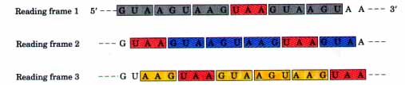 |
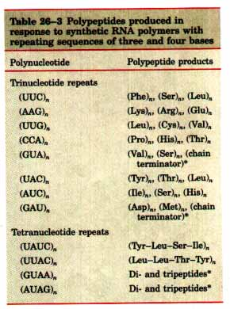 * With these polynucleotides, the patterns of amino acid incorporation into polypeptides are affected by the presence of codons that are termination signals for protein biosynthesis. In the repeating three-base sequences, one of the three reading frames includes only termination codons and thus only two homopolypeptides are observed (generated from the remaining two reading frames). In some of the repeating four-base sequences, every fourth codon is a termination codon in every reading frame, so that only short peptides are produced. This is illustrated in Figure 26-6 for (GUAA)". Figure 26-6 The effect of a termination codon incorporated within a repeating tetranucleotide. Dipeptides or tripeptides will be synthesized, depending on where the ribosome initially binds. The three different reading frames are shown in different colors. Termination codons (indicated in red) are encountered every fourth codon in all three reading frames. |
With these approaches the base sequences
of all the triplet code words for each of the amino acids
were established by 1966. Since then, these code words
have been verified in many different ways. The complete
codon "dictionary" for the amino acids is given
in Figure 26-7. The cracking of the genetic code is
regarded as the greatest scientific discovery of the
1960s. The Genetic Code Has Several Important CharacteristicsThe key to the organization of the genetic information specifying a protein can be found in codons and in the array of codons that constitutes a reading frame. Keep in mind that no punctuation or signal is required to indicate the end of one codon and the beginning of the next. The reading frame must therefore be correctly set at the beginning of the readout of an mRNA molecule and then moved sequentially from one triplet to the next. If the initial reading frame is off by one or two bases, or if the ribosome accidentally skips a nucleotide in the mRNA, all the subsequent codons will be out of register and will lead to formation of a "missense" protein with a garbled amino acid sequence. |
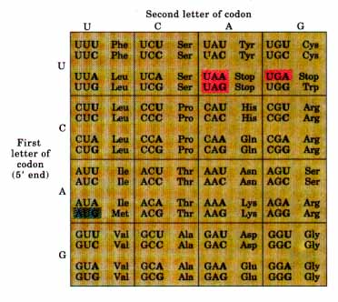 Figure 26-7 The "dictionary" of amino acid code words as they occur in mRNAs. The codons are written in the 5'→3' direction. The third base of each codon, shown in bold type, plays a lesser role in specifying an amino acid than the first two. The three termination codons are shaded in red, and the initiation codon AUG is shaded in green. Note that all the amino acids except methionine and tryptophan have more than one codon. In most cases, codons that specify the same amino acid dif fer only in the third base. |
Several of the codons serve special functions. The initiation codon, AUG, signals the beginning of polypeptide chains. AUG not only is the initiation codon in both prokaryotes and eukaryotes but also codes for Met residues in internal positions of polypeptides. Of the 64 possible nucleotide triplets, three (UAA, UAG, and UGA) do not code for any known amino acids (Fig. 26-7); they are the termination codons (also called stop codons or nonsense codons), which normally signal the end of polypeptide chain synthesis. The three termination codons acquired the name "nonsense codons" because they were first found to result from single-base mutations in E. coli in which certain polypeptide chains are prematurely terminated. These nonsense mutations, arbitrarily named amber, ochre, and opal, respectively, helped make possible identification of UAA, UAG, and UGA as termination codons.
| In a random sequence of nucleotides, one
in every 20 codons in each reading frame, on average,
will be a termination codon. Where a reading frame exists
without a termination codon for 50 or more codons, the
region is called an open reading frame. Long open reading
frames usually correspond to genes that encode proteins.
An uninterrupted gene coding for a typical protein with a
molecular weight of 60,000 would require an open reading
frame with 500 or more codons. See Box 26-1 (p. 900) for
some interesting exceptions to this general pattern. Perhaps the most striking feature of the genetic code is that it is degenerate, meaning that a given amino acid may be speciiied by more than one codon (Table 26-4). Only methionine and tryptophan have single codons. Degenerate does not mean imperfect; the genetic code is unambiguous because no codon specifies more than one amino acid. Note that the degeneracy of the code is not uniform. For example, leucine and serine have six codons, glycine and alanine have four, and glutamate, tyrosine, and histidine have two. When an amino acid has multiple codons, the difference between the codons usually lies in the third base (at the 3' end). For example, alanine is coded by the triplets GCU, GCC, GCA, and GCG. The codons for nearly all of the amino acids can be symbolized by XYAG or XYUC. The first two letters of each codon are therefore the primary determinants of specificity. This has some interesting consequences. |
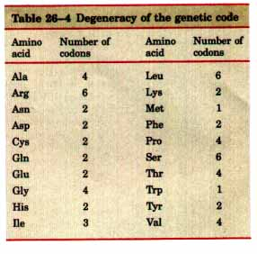 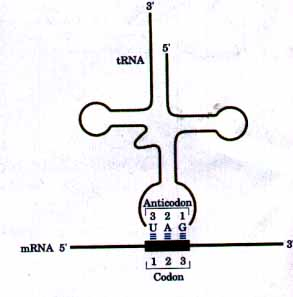 Figure 26-8 The pairing relationship of codon and anticodon. Alignment of the two RNAs is antiparallel. The tRNA is presented in the traditional cloverleaf configuration. |